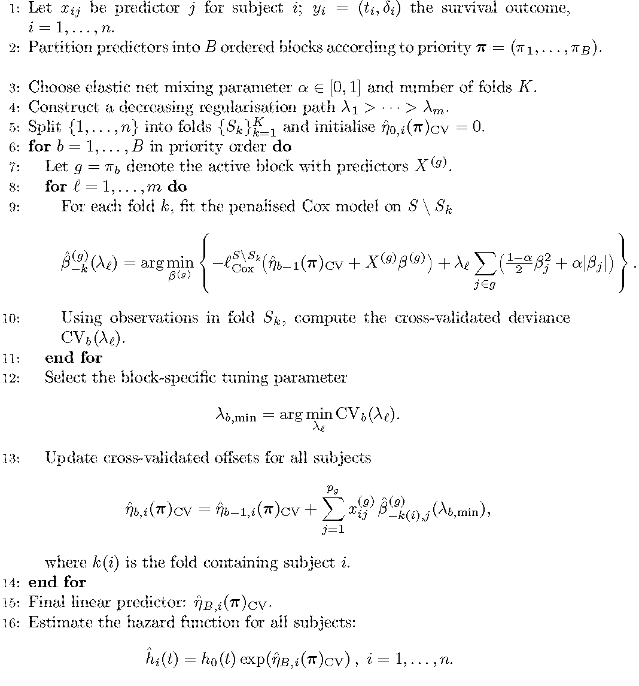
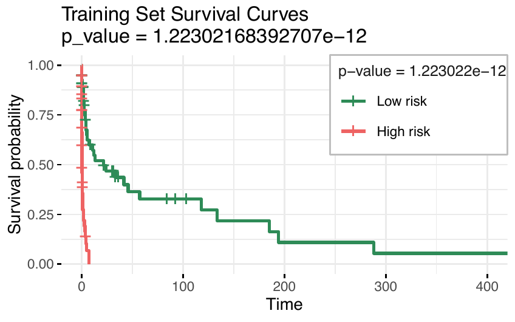
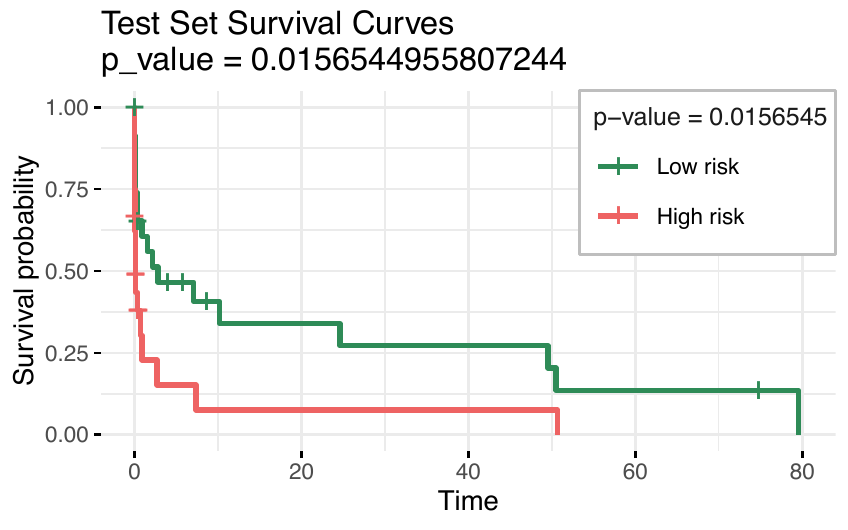

The rapid development of high-throughput technologies has produced increasingly complex and high-dimensional biological datasets, requiring advanced statistical methods. In such contexts, where the number of variables exceeds the number of observations, variable selection is crucial to improve prediction accuracy, reduce variance, and enhance interpretability. The integration of multiple omics datasets collected from the same set of patients introduces additional challenges, including heterogeneity, multicollinearity, and the need to prioritise information across data blocks. The Priority Elastic Net method addresses these challenges by incorporating prior knowledge of block structure. The priorityelasticnet package, available on CRAN, provides implementations for continuous, binary, multinomial, and survival outcomes in R. It sequentially fits elastic net (or adaptive elastic net) models to predefined blocks, enabling customised penalisation and flexible feature selection. This framework is particularly useful for multi-omics integration and other structured high-dimensional applications.
In the field of high-dimensional omics data analysis, regularisation techniques have become essential due to their ability to simultaneously select variables and estimate models, particularly when the number of explanatory variables greatly exceeds the sample size. A variety of computational packages have been developed to implement these techniques effectively, addressing a range of research needs in omics studies.
The least absolute shrinkage and selection operator (lasso) (Tibshirani 1996) is a popular method for regression that uses an \(\ell_1\) penalty to achieve a sparse solution. This idea has been broadly applied, for example, to generalized linear models (Tibshirani 1996) and Cox proportional hazard models for survival data. (Tibshirani 1997).
While the lasso excels at promoting sparsity, it does not account for feature ordering or structure, a limitation particularly pronounced in high-dimensional omics data. To overcome this, extensions such as the fused lasso (Tibshirani et al. 2005) incorporate penalties that encourage smoothness along ordered features. In contrast, the adaptive lasso (Zou 2006) dynamically adjusts penalties to improve variable selection. These methods are integrated into specialised packages, such as SQOPT (Arnold et al. 2022) and adalasso.
Despite its success in many applications, the lasso method struggles with variable selection when features are highly correlated, as it tends to select only one variable from a group, a limitation in applications such as microarray data analysis, where genes often interact in networks. To address this issue, (Zou and Hastie 2005) proposed the elastic net penalty, which is a weighted sum of the \(\ell_1\) norm and the square of the \(\ell_2\) norm of the coefficient vector \(\boldsymbol{\mathbf{\beta}}\). The first term enforces the sparsity of the solution, whereas the second term encourages a more balanced selection of correlated variables.
The glmnet package, one of the most popular implementations in R and Python, provides a robust, widely used framework for applying lasso, elastic net, and related techniques. Details may be found in (Friedman et al. 2010), (Simon et al. 2011), (Tibshirani et al. 2012). The glmnet R package (Friedman et al. 2010) contains efficient functions for computing the elastic net solution for a complete path-wise optimisation. The minimisation problems are solved via cyclic coordinate descent (Van der Kooij 2007), with the core routines programmed in Fortran for computational efficiency. Earlier versions of the package contained specialised Fortran subroutines for a handful of popular GLMs and the Cox model for right-censored survival data. The package includes functions for performing K-fold cross-validation (CV) for hyperparameter optimisation, plotting coefficient paths and CV errors, and predicting on future data. The package can also accept the predictor matrix in sparse matrix format: this is especially useful in certain applications where the predictor matrix is both large and sparse. In particular, this means that we can fit unpenalised GLMs with sparse design matrices, something that the glm function from the package stats does not support.
Version 4.0 and later of
glmnet (Friedman et
al. 2023) represent a significant release that expands the
package’s capabilities for survival modelling. It supports multiple
events per subject, delayed entry, time-dependent covariates and/or
strata, and other extensions, through the (start, stop] formulation of
the survival data that specifies the start and end of each time
interval. Additionally, it includes sparse \(X\) inputs, and the
much-requested survival:survfit method. The package computes the
elastic net regularisation path for all GLMs, Cox models with (start,
stop] data and strata, and includes a simplified implementation of the
relaxed lasso (Hastie et al. 2020), providing greater flexibility for
high-dimensional data analysis.
To address the instability often observed in methods based on the elastic net, adaptive strategies have been incorporated into regularisation frameworks. One such approach is the Adaptive Elastic Net (AENet), implemented in the R package msaenet. AENet refines the elastic net regularisation method to enhance feature selection and model performance, particularly in high-dimensional settings or in the presence of multicollinearity among predictors. Unlike the standard elastic net, which applies the same penalty to all coefficients, AENet introduces adaptive weighting to penalise features differently based on their importance (Zou and Zhang 2009).
In the era of multi-omics research, integrating data across multiple omics layers is crucial for harnessing the complementary information from diverse biological systems. Single-data-type models often fail to capture the full complexity of underlying biological processes. Recent advances have underscored the importance of combining high-dimensional omics data, including clinical information, gene expression, methylation profiles, and other omics layers, to improve predictive modelling frameworks (Huang et al. 2017).
Using multi-omics data in prediction models is promising because each omics type offers unique and valuable information for predicting phenotypic outcomes. However, effectively integrating various types of omics data presents several challenges. First, there is an overlap in the predictive information each data type provides. Second, the levels of predictive details differ between the ‘blocks’ of variables (which can correspond to the type of data, e.g., the block of clinical variables or the block of gene expression variables) and depend on the particular outcome considered (Zhao et al. 2015). Third, the interactions between variables of different data types must be considered (Huang et al. 2017). In recent years, different methods have been proposed to address this topic. (Simon et al. 2013) presented the sparse group lasso, a prediction method for grouped covariate data that automatically removes non-informative covariate groups and performs lasso-type variable selection for the remaining covariate groups. The SGL package (Simon et al. 2018) in R is a notable implementation that combines the strengths of group lasso and lasso for sparse solutions at both the group and individual variable levels.
One limitation of using sparse lasso in multi-omics data applications is that it does not adequately account for the varying levels of predictive information across different data blocks. In contrast, the IPF-LASSO (Boulesteix et al. 2017), a lasso-type regression method for multi-omics data, addresses this by assigning individual penalty parameters to different omics data types, allowing incorporation of prior biological knowledge or practical constraints. One common issue for all variations of LASSO, including IPF-LASSO, is instability. Even small modifications to the dataset can significantly change the selected model. The IPF-LASSO method addresses the unique challenges of multi-omics data integration, particularly the differing levels of predictive information across data blocks. The ipflasso package (Boulesteix and Fuchs 2015) has been developed to implement this method, offering a tailored approach to multi-omics data analysis.
Building on the idea of representing each omics dataset as a block, (Klau et al. 2018) introduced the Priority-Lasso method, implemented in the prioritylasso package, as a lasso-based approach designed explicitly for multi-omics data analysis. This method emphasises practical usability by allowing users to assign priority rankings to data blocks based on cost or relevance.
The package prioritylasso, developed for applications involving continuous, binary, and survival outcomes, was initially released on CRAN as version 0.2.4, as documented in (Klau et al. 2017). Available from the CRAN repository, the package builds on the lasso regression implementation in glmnet (Friedman et al. 2010). The Cox-Lasso model employs the regularisation method described by (Simon et al. 2011). In version 0.3.1, functionality was added to address blockwise missing data. This means that for some observations, not all blocks are observed. To address this type of missingness, prioritylasso offers several options for fitting a model in datasets with missing values. Nevertheless, priority-lasso struggles with multicollinearity, often arbitrarily selecting one variable from correlated groups while excluding others, resulting in unstable models. This approach applies block prioritisation to manage overlapping predictive information, ensuring that lower-priority blocks are not excluded but adjusted for previously explained variance. Although Priority-Lasso effectively promotes sparsity, it may lack stability, particularly in datasets with highly correlated variables or variable groupings of varying sizes. Furthermore, its sequential prioritisation framework does not fully exploit the hierarchical or grouped structures common in omics data, potentially limiting its applicability.
To address some of the limitations highlighted in the literature and summarised above, the Priority Elastic net method was proposed by (Musib et al. 2024) as an enhancement of the Priority-Lasso approach introduced by (Klau et al. 2018). By integrating the elastic net penalty, which balances \(\ell_1\) and \(\ell_2\) regularisation, Priority Elastic Net effectively mitigates issues related to multicollinearity and model instability. This method enhances the retention of predictive features from lower-priority blocks, providing greater flexibility for handling complex, high-dimensional datasets.
The priorityelasticnet package (Musib et al. 2025) is available on the Comprehensive R Archive Network (CRAN) at http://CRAN.R-project.org/package=priorityelasticnet.
A growing number of studies have utilised multi-omics data for various precision medicine-related machine learning tasks, including disease diagnosis, patient sub-phenotyping, and predicting disease or mortality risk. However, data from different omics modalities can be heterogeneous and noisy, with various underlying distributions and scales (Huang et al. 2017). Thus, the way these data are integrated significantly impacts subsequent analyses and interpretations.
The Priority Elastic Net (Musib et al. 2025) builds upon the Priority-Lasso framework (Klau et al. 2018), incorporating elastic net principles to address limitations in handling highly correlated predictors. The implementation of the priorityelasticnet package adapts several functions from the prioritylasso package (Klau et al. 2018; Klau et al. 2017). While Priority-Lasso introduced a hierarchical structure to effectively integrate multi-omics data into regression models, it struggles with datasets containing strongly correlated variables. By combining the strengths of \(\ell_1\) and \(\ell_2\) regularisation (Zou and Hastie 2005), the Priority Elastic Net promotes a grouping effect, ensuring that correlated predictors are retained within the model. This enhancement enables the Priority Elastic Net to deliver improved robustness, interpretability, and accuracy, making it particularly suited to high-dimensional and complex omics datasets.
In the following subsections, we outline the theoretical foundations and computational implementation of Priority Elastic Net optimisation across Gaussian, multinomial, binomial, and Cox regression frameworks, demonstrating its potential in enhancing variable selection. We introduce the main functions of the priorityelasticnet package, which address essential data characteristics, such as handling missing values, and include cross-validation methods. Illustrative examples, primarily based on the Gaussian distribution, are provided to demonstrate their usage. Finally, we introduce the Priority-Adaptive Elastic Net, which further improves model performance by dynamically adjusting variable priorities during optimisation.
We consider the standard setup for linear regression, where the response variable \(Y \in \mathbb{R}\) is continuous. Let \(x_{ij}\) be the independent variable \(j\) of individual \(i\), where \(i = 1, \ldots, n\) , \(j = 1, \ldots, p\) with \(n\) being the total number of individuals and \(p\) the number of independent variables. The vector \(\boldsymbol{\mathbf{x}}_i = (x_{i1}, x_{i2}, \ldots, x_{ip})^T\) represents the set of independent variables for the individual \(i\). For simplicity, the predictor variables \(x_{ij}\) are transformed to z-scores.
In high-dimensional settings, where the number of predictors \((p)\) may exceed the number of observations \((n)\), or where the predictors exhibit strong correlations, traditional linear regression methods often struggle. Issues such as overfitting and multicollinearity reduce the reliability and interpretability of the estimated regression coefficients. To address these challenges, regularisation methods, such as the elastic net, have been developed. The standard elastic net method (Zou and Hastie 2005) estimates the regression coefficients \(\beta_{1}, \ldots ,\beta_{p}\) associated with the \(p\) regressors by minimizing the expression:
\[\begin{equation} \label{eq: elastic net} \hat{\boldsymbol{\mathbf{\beta}}}_{EN}=\arg \min_{\boldsymbol{\mathbf{\beta}}} \Bigg[ \frac{1}{n}\sum\limits_{i=1}^{n}\bigg(y_i- \beta_{0}- \sum\limits_{j=1}^{p}x_{ij}\beta_j\bigg)^2 +\lambda\sum_{j=1}^p \left(\alpha |\beta_j| + \frac{(1 - \alpha)}{2} \beta_j^2\right)\Bigg], \end{equation} \tag{1}\]
where \(\lambda \geq 0\) is a tuning parameter, and \(\alpha \in [0, 1]\) is a higher-level hyperparameter that controls the balance between the lasso and ridge penalties. A sequence of models is typically fitted across a range of \(\lambda\) values, while the value of \(\alpha\) is predetermined based on the desired characteristics of the prediction model. For example, ridge regression (Hoerl1970ridge?) is defined with \(\alpha = 0\), while lasso regression (Tibshirani 1996) is defined with \(\alpha = 1\).
The final value of \(\lambda\) is usually chosen via cross-validation: we select the coefficients corresponding to the \(\lambda\) value that minimises the cross-validated error as the final model.
Coordinate descent solves the optimisation problem by iteratively
optimising each coefficient \(\beta_j\) while keeping the others fixed
(Friedman et al. 2010). The formula for updating \(\beta_j\) is given by:
\[\hat{\beta}_j = S\left(\frac{1}{n} \sum_{i=1}^n x_{ij} \left( y_i - \hat{y}_i^{(j)} \right), \lambda \alpha \right) \frac{1}{1 + \lambda (1 - \alpha)},\] where \[\hat{y}_i^{(j)} = \hat{\beta}_0 + \sum_{\ell \neq j} x_{i\ell} \hat{\beta}_\ell,\] and the soft-thresholding operator \(S(z, \gamma)\) is defined as: \[S(z, \gamma) = \text{sign}(z) \max(|z| - \gamma, 0).\] In this context, the notation is adapted to address the case of grouped variables, as considered in this work. The model partitions the predictors into \(B\) blocks, with the observations of the \(p_{b}\) variables from block \(b\) for subject \(i\) being represented as \((x_{i1}^{(b)}, . . . , x_{ip_{b}}^{(b)} )\), for \(i=1,...,n\) and for \(b = 1, . . . , B\). This block structure reflects the natural organisation of multi-omics data, where each omics layer (e.g., transcriptomics, proteomics, methylation) typically forms a separate block, often combined with a clinical block. More generally, it can also represent other meaningful groupings, such as biological pathways or categories of clinical variables. Just as \(x^{(b)}_{ij}\) is defined, \(\beta^{(b)}_{j}\) is the regression coefficient of the \(j^{th}\) variable from block \(b\), with \(j\) ranging from 1 to \(p_b\). Accordingly, \(\hat{\beta}^{(b)}_{j}\) denotes the respective estimated value.
Consider \(\boldsymbol{\mathbf{\pi}} = (\pi_1, \ldots, \pi_B)\) as a reordering of the sequence \((1, \ldots, B)\), signifying the priority order of blocks, where \(\pi_1\) represents the index of the block with highest significance and \(\pi_B\) denotes the one of least priority. Subsequently, a hierarchical method is employed to construct the predictive model, adhering to this established order of block importance. The first step is to estimate the \(\beta_j^{(\pi_1)}\) coefficients, by minimising: \[\begin{equation} \label{eq:elstic_block1} l(\boldsymbol{\mathbf{\beta}}^{(\pi_1)}) = \sum\limits_{i=1}^{n}\bigg(y_i- \beta_0^{(\pi_1)}-\sum\limits_{j=1}^{p_{\pi_1}}x_{ij}^{(\pi_1)}\beta_j^{(\pi_1)}\bigg)^2 + \lambda^{(\pi_1)} \sum\limits_{j=1}^{p_{\pi_1}} \Big( \alpha \lvert \beta_j^{(\pi_1)} \rvert + \frac{(1 - \alpha)}{2}(\beta_j^{(\pi_1)})^2 \Big). \end{equation} \tag{2}\] The fitted linear predictor, \(\hat{\eta}_{1,i}(\boldsymbol{\mathbf{\pi}})\), in this step is given as: \[\begin{equation} \hat{\eta}_{1,i}(\boldsymbol{\mathbf{\pi}})= \hat{\beta}^{(\pi_1)}_0+ \hat{\beta}_1^{(\pi_1)}x_{i1}^{(\pi_1)} + . . . + \hat{\beta}_{p_{\pi_1}}^{(\pi_1)} x_{ip_{\pi_1}}^{(\pi_1)}. \end{equation}\] Next, the elastic net method is applied to the block of predictors with the second highest priority, incorporating the fitted linear predictor from the first step as an offset. The goal is to determine the values of \(\hat{\beta}_{1}^{(\pi_2)}, \ldots, \hat{\beta}_{p_{\pi_2}}^{(\pi_2)},\) which are the coefficients corresponding to the predictors within the second priority block, \(\pi_2\). These coefficients are determined by minimising a specific criterion, outlined as follows: \[\begin{equation} l(\boldsymbol{\mathbf{\beta}}^{(\pi_2)}) = \sum\limits_{i=1}^{n}\bigg(y_i- \hat{\eta}_{1,i}(\boldsymbol{\mathbf{\pi}})-\beta_0^{(\pi_2)}-\sum\limits_{j=1}^{p_{\pi_2}}x_{ij}^{(\pi_2)}\beta_j^{(\pi_2)}\bigg)^2 + \lambda^{(\pi_2)} \sum\limits_{j=1}^{p_{\pi_2}} \Big( \alpha \lvert \beta_j^{(\pi_2)} \rvert + \frac{(1 - \alpha)}{2}(\beta_j^{(\pi_2)})^2 \Bigg\}. \end{equation}\]
The linear predictor for the second step, \(\hat{\eta}_{2,i}(\boldsymbol{\mathbf{\pi}})\), is derived by adding the offset obtained from the first step, \(\hat{\eta}_{1,i}(\boldsymbol{\mathbf{\pi}})\), with the linear combination of the predictors in the second priority block and their respective estimated coefficients, \(\hat{\beta}^{(\pi_2)}\). This relationship can be represented as:
\[\begin{equation} \hat{\eta}_{2,i}(\boldsymbol{\mathbf{\pi}}) =\hat{\eta}_{1,i}(\boldsymbol{\mathbf{\pi}}) + \hat{\beta}_0^{(\pi_2)}+ \hat{\beta}_1^{(\pi_2)}x_{i1}^{(\pi_2)} + . . . + \hat{\beta}_{p_{\pi_2}}^{(\pi_2)}x_{ip_{\pi_2}}^{(\pi_2)}. \end{equation}\]
Then, similarly, the model is fitted to the block with the third highest priority, using the linear score from the second step as an offset. All remaining blocks are treated in the same manner, \[\begin{equation} \hat{\eta}_{b,i}(\boldsymbol{\mathbf{\pi}}) = \hat{\eta}_{b-1,i}(\boldsymbol{\mathbf{\pi}}) + \hat{\beta}_0^{(\pi_b)}+ \hat{\beta}_{ 1}^{(\pi_b)} x_{i1}^{(\pi_b)} + \ldots + \hat{\beta}_{ p_{\pi_b}}^{(\pi_b)} x_{ip_{\pi_b}}^{(\pi_b)}, \end{equation}\] where \(\hat{\eta}_{0,i}(\boldsymbol{\mathbf{\pi}}) = 0\) and \(b = 1, \ldots, B\).
The fitting procedure is carried out sequentially through the blocks up to \(\pi_B\), yielding the set of coefficient estimates \(\hat{\beta}^{(\pi_b)}\) for \(b = 1, \ldots, B\). The final fitted linear predictor becomes \[\begin{equation} \hat{\eta}_{i}(\boldsymbol{\mathbf{\pi}}) = \sum_{b=1}^{B} \hat{\beta}_0^{(\pi_b)}+ \sum_{b=1}^{B} \sum_{j=1}^{p_{\pi_b}} \hat{\beta}^{(\pi_b)}_j x^{(\pi_b)}_{ij}. \end{equation}\]
As previously discussed, Priority Elastic Net assigns a priority order to blocks, allowing the model to incorporate prior knowledge. However, this hierarchical structure may negatively affect predictive accuracy by underestimating the influence of predictors in lower-priority blocks and potentially discarding informative variables. This issue occurs because the linear score in each block, \(\hat{\eta}_{b,i}(\boldsymbol{\mathbf{\pi}})\), tends to overfit the contribution of predictors in the \(b\)-th block to the response \(y_i\). Specifically, the estimation of \(\hat{\eta}_{b,i}(\boldsymbol{\mathbf{\pi}})\) tends to overfit the effects of predictors in the \(b\)-th block on the response \(y_i\). This overfitting arises because the coefficients \(\hat{\beta}_1^{(\pi_b)}, \ldots, \hat{\beta}_{p\pi_b}^{(\pi_b)}\) are estimated using data that includes \(y_i\), the response being predicted. Consequently, the overfitted score \(\hat{\eta}_{b,i}(\boldsymbol{\mathbf{\pi}})\) captures variability in \(y_i\) that might better be explained by predictors in subsequent blocks. When this overfitted estimate is used as an offset, it limits lower-priority blocks’ ability to account for unexplained variability in \(y_i\), thereby undermining the model’s overall predictive accuracy.
To mitigate this overfitting problem, cross-validated offsets, \(\hat{\eta}_{b,i}(\pi)_\text{CV}\), previously introduced in the Priority Lasso framework, are also applied in the Priority Elastic Net to improve generalisation. In this approach, a dataset \(S\) is partitioned using \(K\)-fold cross-validation, and the cross-validated offsets are determined to effectively address the identified overfitting issues. The cross-validated offsets are computed iteratively as follows: \[\begin{equation} \hat{\eta}_{b,i}(\boldsymbol{\mathbf{\pi}})_\text{CV} = \hat{\eta}_{b-1,i}(\boldsymbol{\mathbf{\pi}})_\text{CV} + \hat{\beta}^{(\pi_b)}_{S \setminus S_{k,0}} + \hat{\beta}^{(\pi_b)}_{S \setminus S_{k,1}}x_{i1}^{(\pi_b)} + \ldots + \hat{\beta}^{(\pi_b)}_{S \setminus S_{k,p_{\pi_b}}}x_{ip_{\pi_b}}^{(\pi_b)}, \, \, \, b = 1, . . . , B \end{equation}\] where the process starts with the initial condition: \(\hat{\eta}_{0,i}(\boldsymbol{\mathbf{\pi}})_\text{CV} = 0\).
Priority Elastic Net is implemented in the
priorityelasticnet
function in our R package of the same name. This function includes the
option cvoffset, which allows users to choose between cross-validated
offsets and standard offsets estimated without cross-validation, as
outlined in the algorithm presented in this section.
To illustrate the implementation of Priority Elastic Net for the Gaussian family, a synthetic dataset was simulated to mimic the high-dimensional characteristics typical of multi-omics studies. In this example, \(n=100\) observations and \(p=500\) predictors are generated, with only the first 10 predictors contributing to the response variable.
set.seed(123)
n <- 100
p <- 500
X <- matrix(rnorm(n * p), n, p)
beta <- rnorm(10)
Y <- X[, 1:10] %*% beta + rnorm(n)Before applying Priority Elastic Net, the user must first specify a
block structure for the covariates, where each covariate belongs to
exactly one of the \(B\) blocks, and second, a priority order for these
blocks. In this framework, three blocks of continuous predictor
variables were analysed, all of which are subject to penalisation, while
adapting our notation to account for variables forming groups as
considered in this work. The first entry in the blocks list specifies
the indices of the variables that belong to the block assigned the
highest priority (priority 1), which is the first block included in the
model. As an example, if blocks = list(1:10, 11:30, 31:500), the first
priority block contains the first 10 variables in the data matrix.
Similarly, the block assigned priority 2 includes variables 11-30,
whereas the block assigned priority 3 comprises variables 31-500.
blocks <- list(block1 = 1:10, block2 = 11:30, block3 = 31:500)The priorityelasticnet function fits a hierarchical elastic net model
across multiple blocks of variables. In this example, the model is
fitted with family="gaussian" for continuous response variables, with
the block1.penalization parameter controlling how the first block
(priority 1) is treated during model fitting.
fit_gaussian <- priorityelasticnet(
X = X, Y = Y, family = "gaussian", blocks = blocks,
block1.penalization = TRUE, standardize = TRUE,
lambda.type = "lambda.min", max.coef = c(Inf, Inf, Inf),
nfolds = 10, type.measure = "mse", alpha = 0.6,
cvoffset = TRUE, cvoffsetnfolds = 10,
adaptive = FALSE, initial_global_weight = FALSE
)When block1.penalization = TRUE, the function applies a standard
elastic net model to the first block, treating it similarly to other
blocks. The predictions from this first block are then used as offsets
in the elastic net fitting of the subsequent blocks, following their
priority order. Conversely, when block1.penalization = FALSE, the
function fits the first block without penalisation, making this setting
appropriate for scenarios where clinical predictors (with \(p<n\)) are
included. Clinical predictors in the first block are not penalised to
preserve their established relevance. In this case, the unpenalized
predictions serve as offsets for the subsequent elastic net fits for
lower-priority blocks.
The standardize = TRUE leads to a standardisation of the predictor
variables. In case of an unpenalized first block, the predictor
variables for the first block are not standardised. Please note that the
returned coefficients are rescaled to the original scale of the
predictor variables as provided in \(\mathbf{X}\). Therefore, new data in
predict.priorityelasticnet should be on the same scale as
\(\mathbf{X}\).
The nfolds and lambda.type are options referring to the
cross-validation procedure in cv.glmnet. The nfolds specifies the
number of folds in the procedure, while lambda.type handles the amount
of cross-validation error. It can be set to either lambda.min, which
is also the default, or lambda.1se. The lambda.min gives the result
with minimum mean cross-validation error, whereas lambda.1se gives the
result such that the cross-validation error is within one standard error
of the minimum, and thus leads to more sparse results. Note that the
latter can only be chosen in combination with no restrictions in
max.coef.
The function used for every Priority Elastic net fit is
glmnet, which creates a
sequence of lambda values. The lambda which is chosen according to
lambda.type is the lambda on position lambda.ind of the sequence and
its value is stored in lambda.min. In general, the lower the value of
lambda.ind, the higher the lambda.min and thus the penalisation.
This leads to more sparse models. The number of lambda values can be
chosen with an optional argument.
The values of lambda are automatically generated in each call of
glmnet, based on the
input data and model parameters, and may therefore differ between runs.
Consequently, \(\lambda\) values from separate model fits cannot be
directly compared unless a common sequence is explicitly defined. The
corresponding mean cross-validated error is stored in the list
min.cvm. The interpretation of its values depends on the argument
type.measure.
The type.measure is the accuracy/error measure computed in
cross-validation. It should be "class" (classification error) or
"auc" (area under the ROC curve) if family="binomial", "mse" (mean
squared error) if family="gaussian" and "deviance" if
family="cox", which uses the partial-likelihood.
The cvoffset parameter is a logical flag that determines whether
cross-validation (CV) should be used to estimate offsets during elastic
net fitting. By default, its value is set to FALSE, meaning no CV is
performed for offset estimation unless explicitly specified. If
cvoffset is set to TRUE, the cvoffsetnfolds parameter becomes
relevant, allowing the user to specify the number of folds for the CV
procedure used in estimating the offsets. The default value for
cvoffsetnfolds is 10, which means the data will be split into 10 folds
during the CV process.
The adaptive argument in
priorityelasticnet
introduces an advanced layer of flexibility by enabling the adaptive
elastic net, which enhances the standard elastic net through the use of
data-driven adaptive weights. This methodology is explained in detail in
Section 2.4. Additionally, the initial_global_weight
option allows for further customisation by enabling users to apply a
global weight across all predictors before fitting the adaptive elastic
net. This argument is also discussed in detail in
Section 2.4.
The main results of the fitted model from the
priorityelasticnet
are stored in an object returned by the functions provided by the
package, which includes the coefficient estimates, tuning parameters,
and related outputs. The estimated model parameters can be extracted
using the coef.priorityelasticnet function, a method of the generic
coef() function specifically designed to retrieve the coefficients
from the fitted model object. It represents the relationship between the
predictors and the response variable. Understanding these coefficients
is essential for gaining insights into how each predictor influences the
outcome, particularly in the context of penalised regression models
where some coefficients may be shrunk towards zero or set to zero due to
regularisation.
The
priorityelasticnet
package was developed under the assumption that practitioners have prior
knowledge of the data, enabling them to specify the priorities. However,
it may be that, especially in the presence of several blocks, it is not
clear which block order is best. For this reason,
cvm_priorityelasticnet was implemented. This function allows the user
to define multiple possible lists of blocks. The function selects the
optimal block order based on the mean cross-validated error. Similarly,
several vectors with maximal coefficients can be specified in
max.coef.list. The following example demonstrates how to use the
cvm priorityelasticnet function to evaluate and compare different
block configurations.
fit_cvm <- cvm_priorityelasticnet(
X = X, Y = Y, weights = rep(1, n),
foldid = sample(rep(1:10, length.out = n)),
family = "gaussian", type.measure = "mse",
blocks.list = list(list(bp1 = 1:10, bp2 = 11:30, bp3 = 31:500),
list(bp1 = 1:10, bp2 = 31:500, bp3 = 11:30)),
max.coef.list = list(c(Inf, Inf, Inf), c(Inf, 100, Inf)),
block1.penalization = TRUE,
lambda.type = "lambda.min",
standardize = TRUE,
nfolds = 10,
cvoffset = TRUE,
cvoffsetnfolds = 10,
alpha = 0.6,
adaptive = FALSE,
initial_global_weight = FALSE)In this example, two distinct block configurations, blocks.list, are
defined and passed to the cvm_priorityelasticnet function. This
function performs cross-validation on each configuration, calculating
the mean squared error (MSE) for each model. Comparing these MSE values
enables the identification of the block configuration that yields the
best predictive performance. The output from fit_cvm provides detailed
information regarding the performance of each block configuration,
including cross-validated MSE values, the optimal lambda for each
configuration, and the number of non-zero coefficients selected by the
model. The elements contained in the R object fit_cvm can be
summarised as follows:
fit_cvm$best.blocks: provides the block configuration that achieves
the best cross-validated performance in terms of MSE;
fit_cvm$best.blocks.indices: provides the position (index) of the
block configuration that achieves the best cross-validated result;
fit_cvm$best.max.coef: provides the blockwise maximum number of
non-zero coefficients allowed in the selected optimal configuration.
Handling missing data is crucial for constructing robust models, particularly when working with real-world datasets that include missing values. The priorityelasticnet package provides several options for handling missing data, allowing users to select the most suitable strategy based on the dataset’s characteristics and analysis goals.
The mcontrol argument in
priorityelasticnet
allows for specifying how missing data should be handled. This
flexibility ensures the model can be effectively fitted, even with
incomplete data, which might otherwise result in biased estimates or
diminished predictive power.
The
priorityelasticnet
package provides methods to handle blockwise missing data, which can be
specified through the mcontrol argument using the missing.control()
function:
missing.control(handle.missingdata = c("none", "ignore", "impute.offset"),
offset.firstblock = c("zero", "intercept"),
impute.offset.cases = c("complete.cases", "available.cases"),
nfolds.imputation = 10,
lambda.imputation = c("lambda.min", "lambda.1se"),
perc.comp.cases.warning = 0.3,
threshold.available.cases = 30,
select.available.cases = c("maximise.blocks", "max"))handle.missingdata: how blockwise missing data should be treated. The
default is "none", meaning that no action is taken and missing values
remain as provided, "ignore" ignores the observations with missing
data for the current block, "impute.offset" imputes the offset for the
missing values.
When handle.missingdata="ignore", the elastic net is fitted to each
block using only the observations without missing values in that block.
This approach avoids data imputation and ensures all available data is
utilised. However, for observations with missing values in the current
block, no offset can be computed for the next block. To address this
issue, the following strategies are implemented:
If observations are missing in the current block, the offset (including the intercept) from the previous block is carried forward.
If observations are missing in the first block, the offset for the second block is set either to \(0\) or to the estimated intercept of the first block.
The offset of a block \(b\) for an observation \(i\) is denoted as \(\delta_{b,i}\), and is formally defined as: \[\delta_{1,i} = \begin{cases} 0 & \text{if } x^{(1)}_{i1}, \dots, x^{(1)}_{ip_1} \text{ are missing} \\ \hat{\eta}_{1,i} \text{ or } \hat{\beta}^{(1)}_0 & \text{if } x^{(1)}_{i1}, \dots, x^{(1)}_{ip_1} \text{ are not missing} \end{cases} \quad \quad \quad \quad \quad \quad \quad \quad \ \\]
\[\delta_{b,i} = \begin{cases} \delta_{b-1,i} & \text{if } x^{(b-1)}_{i1}, \dots, x^{(b-1)}_{ip_{b-1}} \text{are missing}\\ \hat{\eta}_{b-1,i} & \text{if } x^{(b-1)}_{i1}, \dots, x^{(b-1)}_{ip_{b-1}} \text{are not missing} \end{cases}, \quad \text{for} \ b = 3, \dots, B,\]
where \(\hat{\eta}_{b,i}\) is the prediction from block \(b\) for the \(i\)-th
observation. offset.firstblock: determines if the offset of the first
block for missing observations is zero or the intercept of the observed
values for handle.missingdata = "ignore".
For handle.missingdata="impute.offset", it is similar to the previous
method; the elastic net models applied to the individual blocks utilise
only the available data, and no covariates are imputed. However, unlike
the previous approach, the offset for observations with missing values
is not retained from the earlier block; instead, it is imputed. This
approach offers the benefit of imputing only a single value, rather than
potentially a very large number of covariates. The concept behind this
method is inspired by Hieke et al. (2016), which only imputes an offset.
In their work, they utilise just three blocks, resulting in a fixed
configuration for the imputation model. Here, we extend this idea into a
generalised framework, introducing two distinct strategies for selecting
which blocks to use. As Priority Elastic Net is an elastic net-based
method, the imputation model uses an elastic net as well. Generally, any
model that can predict a continuous outcome can be used as the
imputation model. In the following sections, this is represented by only
referencing a general regression model \(F(\cdot)\). Let \(F(\cdot)\) be a
general regression model that can be trained by providing the dependent
variable and the independent variables.
The argument impute.offset.cases defines which observations are used
to construct the imputation model for missing offsets. Supported options
are complete.cases, which limits the imputation to fully observed
cases (with the additional constraint that each observation may contain
at most one missing block), and all.available.cases, which uses all
observations for which data are available in the current block.
The first approach (impute.offset.cases="complete.cases") utilises all
blocks except the current one to impute the offset derived from the
current block. For this method to work, the dataset must include some
observations without missing values (complete cases). A reasonable lower
limit for the number of complete cases must be established. Based on the
work of Hieke et al. (2016), who used 26 complete cases, the default
threshold is set to 30 cases. Another limitation of this approach is
that each observation with missing data can have at most one missing
block, as all other blocks are required for the imputation model. A more
formal description is provided below.
If only the complete cases are used for the imputation model and \(I = \{1, \ldots, n\}\) is the set of observation indices, the observations used for the imputation model are defined as: \[I_{\text{comp,imp}} = \{i \in I \mid x^{(b)}_{i1}, \ldots, x^{(b)}_{ip_b} \text{ are not missing } \forall b\},\] where \(x^{(b)}_{i1}, \ldots, x^{(b)}_{ip_b}\) are the covariates of the \(b\)-th block of the \(i\)-th observation. Let \(F(\cdot)\) be a general regression model that can be trained by providing the dependent variable and the independent variables. Then \(\tilde{F}(\cdot)\) represents a trained regression model that returns its prediction when provided with the independent variables.
The algorithm below describes how, for an observation \(j\) with a missing block \(b\), the corresponding linear predictor (offset) is imputed as \(\hat{\kappa}_{\text{comp},b,j}\).
Identify the set of complete cases \(I_{\text{comp,imp}}\), as defined above.
For all observations \(i \in I_{\text{comp,imp}}\), compute the offset (linear predictor) for block \(b\), denoted by \(\hat{\kappa}_{\text{comp},b,i}\).
Train the regression model \(\tilde{F}(\cdot)\) using the complete cases \(I_{\text{comp,imp}}\), where the dependent variable is the offset \(\hat{\kappa}_{\text{comp},b,i}\), and the covariates are the predictors from all other observed blocks, collectively denoted by \(x^{(-b)}_i\) (that is, all blocks except the one currently missing block \(b\)).
For the observation \(j\) with missing block \(b\), use the trained regression model \(\tilde{F}(\cdot)\) to predict the value of the missing offset \(\hat{\kappa}_{\text{comp},b,j}\).
The offset for a given observation \(i\) in block \(b\) is defined as: \[\delta_{1,i} = 0,\]
\[\begin{equation*} \delta_{b,i} = \begin{cases} \hat{\eta}_{b-1,i}, & \text{if } x^{(b-1)}_{i1}, \dots, x^{(b-1)}_{ip_{b-1}} \text{ are observed}, \\ \hat{\kappa}_{\text{comp},b-1,i}, & \text{if } x^{(b-1)}_{i1}, \dots, x^{(b-1)}_{ip_{b-1}} \text{ are missing}, \end{cases} \end{equation*}\]
\[\begin{equation*} \text{for } b = 2, \dots, B, \quad \forall i \text{ such that each observation } i \text{ contains at most one missing block } b. \end{equation*}\]
where:
\(\delta_{b,i}\) denotes the offset for block \(b\) and observation \(i\);
\(\hat{\eta}_{b-1,i}\) is the prediction obtained from block \(b-1\) for observation \(i\);
\(\hat{\kappa}_{\text{comp},b-1,i}\) represents the predicted (compensatory) offset used when predictors in block \(b-1\) are missing.
The previous approach consistently relies on all other blocks to impute
the offset for a missing block. However, in many datasets, there may be
no observations with complete cases, or observations may have more than
one block missing. To address these situations, a more adaptable method
was developed (impute.offset.cases="all.available.cases"). This
approach segments the observations into different subsets based on their
missingness patterns. A missingness pattern indicates which specific
combination of blocks is missing for a particular observation. For each
unique pattern, a separate imputation model is constructed and fitted.
\[\delta_{1,i} = 0\]
\[\delta_{b,i} = \begin{cases} \hat{\eta}_{b-1,i}, & \text{if } x^{(b-1)}_{i1}, \dots, x^{(b-1)}_{ip_{b-1}} \text{ are not missing}, \\ \hat{\kappa}^{\text{comp}}_{b-1,i}, & \text{if } x^{(b-1)}_{i1}, \dots, x^{(b-1)}_{ip_{b-1}} \text{ are missing}, \end{cases}\]
\[\text{for } b = 2, \dots, B, \quad \forall i \quad \text{such that every observation } i \text{ misses at most 1 block } b.\]
The remaining arguments of the missing.control function are described
below:
nfolds.imputation: nfolds for the glmnet of the imputation model;
lambda.imputation: which lambda-value should be used for predicting
the imputed offsets in cv.glmnet;
perc.comp.cases.warning: percentage of complete cases when a warning
is issued of too few cases for the imputation model.
threshold.available.cases: if the number of available cases for
impute.offset.cases = available.cases is below this threshold,
priorityelasticnet tries to reduce the number of blocks included in
the imputation model to increase the number of observations used for
imputation;
select.available.cases: determines how the blocks which are used for
the imputation model are selected when
impute.offset.cases = available.cases. max selects the blocks that
maximise the number of observations, maximise.blocks tries to
include as many blocks as possible, starting with the highest-priority
ones.
Below, we demonstrate how to configure the mcontrol argument to handle
missing data by imputing offsets.
In this example, the handle.missingdata = "impute.offset" option,
which is part of the missing data handling mechanism, enables the
priorityelasticnet
function to impute missing values using an offset approach. This method
is particularly advantageous for handling sporadic missing data, as it
allows the model to utilise all available information without discarding
incomplete observations.
mcontrol <- missing.control(handle.missingdata = "impute.offset",nfolds.imputation = 10)
fit_missing <- priorityelasticnet(
X, Y,
family = "gaussian",
type.measure = "mse",
blocks = blocks,
mcontrol = mcontrol)The output includes details on how the missing data was handled, the imputation models employed (if applicable), and the overall model fit.
The predict.priorityelasticnet function is used to generate
predictions from a fitted model. This function can produce different
types of predictions depending on the specified type parameter,
including linear predictors, fitted values, or class probabilities (for
classification models). The handle.missingtestdata parameter manages
missing values in test data, with options such as "none",
"omit.prediction", "set.zero", or "impute.block". In the next
section, each of these options is explained in detail, including their
functionality and the scenarios in which they are most appropriate. The
include.allintercepts parameter determines whether intercepts from all
blocks are included in the prediction (TRUE) or only from the first
block (FALSE by default). The use.blocks parameter allows
customising the blocks used for prediction, defaulting to "all" but
allowing specification of block numbers. Additional customisation can be
achieved through further arguments, making the function versatile for
various prediction scenarios, including handling missing data and
tailoring block selection to specific needs.
Regularised multinomial logistic regression models are widely used in multi-class classification, particularly in high-dimensional data settings. They are instrumental in applications such as bioinformatics and cancer research, where sparsity and interpretability are critical. However, existing regularisation methods often fail to incorporate domain-specific priorities among predictors. To address this, the Priority Elastic Net method, initially developed for binary logistic regression (Musib et al. 2024), is extended to multinomial logistic regression. This novel extension enables the classification of multiple classes by iteratively fitting blocks of predictors with specific priorities. Grounded in well-established logistic regression principles, the multinomial model reduces to standard logistic regression in the binary case (\(K=2\)), where the logit function models the probability of the first class relative to the second. By preserving the block-prioritised variable selection structure, this method provides a flexible and interpretable framework for multiclass problems, making it particularly suited for high-dimensional applications.
Let \(\mathbf{ X}\), the predictor matrix, be an \(n \times p\) matrix, where \(\mathbf{x}_i = ( x_{i1}, x_{i2}, \dots, x_{ip} )^T\) is the \(i\)th row of \(\mathbf{ X}\), i.e., the \(i\)th observation. The response vector \(\mathbf{Y} = ( Y_1, Y_2, \dots, Y_n )^T\) is an \(n \times 1\) vector, where the response \(Y_i\) is categorical, taking a value \(y_i \in \{1, 2, \dots, K\}\) for \(K \geq 3\). This concept has been effectively modelled in previous research, including the works of (Zhu and Hastie 2004) and (Friedman et al. 2010), with \[\begin{equation} P(Y_i = \ell \mid \mathbf{x}_i) = \frac{\exp \left(\beta_{0,\ell} + \mathbf{x}_i^T \boldsymbol{\beta}_{ \ell} \right)}{\sum_{k=1}^{K} \exp \left(\beta_{0,k} + \mathbf{x}_i^T\boldsymbol{\beta}_{k}\right)}, \quad \ell = 1, \dots, K,\,\,\,i=1,\ldots, n. \end{equation}\] where \(\boldsymbol{\beta}_{\ell} = (\beta_{1\ell}, . . . , \beta_{p\ell})^T\) are coefficients estimated by minimizing the following negative log-likelihood function for observations \(\{ (\mathbf{x}_i, y_i) \}_{i=1}^{n}\), where each \(y_i\) is encoded as \(\mathbf{y}_i = (y_{i1}, \dots, y_{iK})^T\) with \(y_{ik} = 1_{y_i = k}\): \[\begin{equation} \label{regularizedmultinomial} \ell(\boldsymbol{\beta}) = -\frac{1}{n} \sum_{i=1}^{n} \log P(Y_i = y_i \mid \mathbf{x}_i) + \lambda F_{\alpha}(\boldsymbol{\beta}) \end{equation} \tag{3}\]
where \(\boldsymbol{\beta}\) denotes the matrix of dimension \((p + 1) \times K\), with the parameters \(\beta_{0,\ell}\) and \(\boldsymbol{\beta}_{\ell}\) in its columns.
In Eq. (3), \(y_{i}\) represents the observed level of the variable \(Y_i\) and the last term represents the penalty function, i.e., the term ensuring sparsity in the model, controlled by the regularisation parameter \(\lambda\).
\[\begin{equation} \label{eq:elastic_net_regularization} F_{\alpha}(\boldsymbol{\beta}) = \sum_{\ell=1}^{K} \left( \alpha \|\boldsymbol{\beta}_{\ell}\|_1 + \frac{1 - \alpha}{2} \|\boldsymbol{\beta}_{\ell}\|_2^2 \right), \end{equation} \tag{4}\]
where \(\lambda > 0\) is a user-specified regularization parameter.
The penalised log-likelihood equation for the elastic-net penalty (Friedman et al. 2023) is given by
\[\begin{equation} \label{eq:multinomial_elastic} \begin{split} \tilde{\ell}(\boldsymbol{\beta}, \lambda, \alpha) =& -\frac{1}{n} \sum_{i=1}^{n} \left( \sum_{k=1}^{K} y_{ik} \left( \beta_{0,k} + \mathbf{x}_i^T \boldsymbol{\beta}_k \right) - \log \left( \sum_{k=1}^{K} \exp(\beta_{0,k} + \mathbf{x}_i^T \boldsymbol{\beta}_k) \right) \right)\\ &+ \lambda \sum_{\ell=1}^{K} \left( \alpha \|\boldsymbol{\beta}_{\ell}\|_1 + \frac{1 - \alpha}{2} \|\boldsymbol{\beta}_{\ell}\|_2^2 \right), \end{split} \end{equation} \tag{5}\]
where the response \(y_{ik}\) is given by an indicator function, \[y_{ik} = I(y_i = k) = \begin{cases} 1, & \text{if } y_i = k \\ 0, & \text{otherwise} \end{cases}.\]
The elastic net or lasso estimate \(\hat{\boldsymbol{\beta}}(\lambda, \alpha)\) can be computed in R using the glmnet package (Friedman et al. 2023), which uses coordinate descent to minimise the penalised negative log-likelihood.
The coordinate descent method is used to obtain the coefficient estimates in regularised multinomial regression. Following Friedman et al. (2010), the optimisation procedure employs partial Newton steps, obtained by forming a partial quadratic approximation, together with the coordinate descent method.
The glmnet package addresses the challenges introduced by regularisation in traditional multinomial logistic regression using a symmetric representation. In traditional models, coefficients for categories are modelled relative to an arbitrary base category, a choice that does not affect fitted probabilities but can lead to sensitivity under regularisation due to penalisation effects. By avoiding reliance on a specific base category, glmnet ensures robust and stable coefficient estimation, eliminating asymmetries arising from base-category selection. This symmetric approach is particularly valuable for methods like the Priority Elastic Net, which incorporate additional structure into the regularisation process. Adopting a symmetric representation in such methods can enhance interpretability and maintain model consistency.
Building upon these principles, the Priority Elastic Net method, an extension of the priority-lasso approach developed by Klau et al. (2018), applies elastic net regularisation iteratively across ordered blocks of variables, fitting each block while using the results of higher-priority blocks as offsets.
The iterative fitting of the multinomial regression model follows the same procedure as described in the previous section for the Gaussian family. Once the fitting has been carried out for all \(B\) blocks under consideration, we obtain the set of coefficient estimates \(\hat{\boldsymbol{\beta}}^{(\pi_b)}\) for \(b = 1, \ldots, B\) and the final fitted linear predictor becomes \[\begin{equation} \hat{\eta}_{i}^{(k)}(\boldsymbol{\mathbf{\pi}}) = \sum_{b=1}^{B} \hat{\beta}_{0,k}^{(\pi_b)}+ \sum_{b=1}^{B} \sum_{j=1}^{p_{\pi_b}} \hat{\beta}^{(\pi_b)}_{j,k} x^{(\pi_b)}_{ij}, \ \ k=1, \ldots, K. \end{equation}\]
The final Priority Elastic Net multinomial logistic regression model, after processing all \(B\) blocks, models the probability of the outcome \(Y_{i}\) belonging to class \(k\) as: \[\begin{equation} P(Y_i = k | \boldsymbol{\mathbf{x}}_i) = \frac{\exp\left( \sum_{b=1}^{B} \hat{\eta}_{b,i}^{(k)}(\boldsymbol{\mathbf{\pi}}) \right)}{\sum_{l=1}^{K} \exp\left( \sum_{b=1}^{B} \hat{\eta}_{b,i}^{(l)}(\boldsymbol{\mathbf{\pi}}) \right)}. \end{equation}\]
However, the linear score \(\hat{\eta}_{1,i}^{(k)}(\boldsymbol{\mathbf{\pi}})\) tends to be over-optimistic with respect to the information usable for predicting \(Y_{i}\) that is contained in block \(\pi_1\). The reason for this is that \(Y_{i}\) was part of the data used for obtaining the estimates \(\hat{\beta}_{j,k}^{(\pi_1)}\) for \(j = 1, \ldots, p_{\pi_1}\), which are then used to calculate \(\hat{\eta}_{1,i}^{(k)}(\boldsymbol{\mathbf{\pi}})\).
When using this over-optimistic estimate \(\hat{\eta}_{1,i}^{(k)}(\boldsymbol{\mathbf{\pi}})\) as an offset in the second step, the influence of block \(\pi_2\) conditional on the influence of block \(\pi_1\) will tend to be underestimated. The reason for this is that by considering the over-optimistic estimate \(\hat{\eta}_{1,i}^{(k)}(\boldsymbol{\mathbf{\pi}})\) as an offset, a part of the variability in \(Y_{i}\) is removed that is actually not explainable by block \(\pi_1\) but would possibly be explained by block \(\pi_2\). As noted above, this problem results from the fact that \(Y_{i}\) is contained in the training data used for estimating \(\hat{\beta}_{j,k}^{(\pi_1)}\) for \(j = 1, \ldots, p_{\pi_1}\). As a solution to this problem we suggest estimating the offsets \(\hat{\eta}_{1,i}^{(k)}(\boldsymbol{\mathbf{\pi}})\) using cross-validation. \[\begin{equation} \hat{\eta}_{b,i}^{(k)}(\boldsymbol{\mathbf{\pi}})_{CV} = \hat{\eta}_{b-1,i}^{(k)}(\pi)_{CV} + \hat{\beta}_{0,k}^{(\pi_b)} + \hat{\beta}_{ 1,k}^{(\pi_b)} x_{i1}^{(\pi_b)} + \ldots + \hat{\beta}_{ p_{\pi_b,k}}^{(\pi_b)} x_{ip_{\pi_b}}^{(\pi_b)}\,\,\,\,\, ,\,\,\, k = 1, \ldots, K, \end{equation}\] where \(\hat{\eta}_{0,i}^{(k)}(\boldsymbol{\mathbf{\pi}})_{CV} = 0\) and \(b = 1, \ldots, B\).
In the following analysis, we address the challenge of fitting a multinomial regression model with predictors organised into distinct blocks. To this end, we employ the Priority Elastic Net, which adaptively tunes block-specific penalties to balance sparsity and model accuracy by combining ridge and lasso regularisation.
The process began with the simulation of synthetic data comprising 100 observations, 500 predictors, and a categorical response variable with three classes. To reflect a realistic scenario, the predictors were divided into three blocks, where block-specific penalties could be applied. This setting is particularly well suited for investigating the joint influence of groups of predictors, each containing a large number of variables, on the response variable.
set.seed(123)
n <- 100 # Number of observations
p <- 500 # Number of predictors
k <- 3 # Number of classes
# Simulate a matrix of predictors
x <- matrix(rnorm(n * p), n, p)
# Simulate a response vector with three classes
y <- factor(sample(1:k, n, replace = TRUE))
# Define predictor blocks
blocks <- list(block1 = 1:10, block2 = 11:30, block3 = 31:500)
# Fit a multinomial model using priorityelasticnet
fit_multinom <- priorityelasticnet(
X = x, Y = y,
family = "multinomial",
alpha = 0.5,
type.measure = "class",
blocks = blocks,
block1.penalization = TRUE,
lambda.type = "lambda.min",
standardize = TRUE,
nfolds = 10,
adaptive = FALSE,
initial_global_weight = FALSE)Survival analysis studies the time until an event of interest occurs and is applied in various fields of science, especially in medical research. It provides statistical methods for investigating the time until an event occurs, such as death, disease recurrence, or the length of stay, defined as the time spent in the hospital during a single admission episode. However, not all event times are observed within the study period, leading to censored observations.
Let \(\boldsymbol{\mathbf{y}} = (y_1, \dots, y_n)\) represent the observed survival times, and \(\boldsymbol{\mathbf{\delta}} = (\delta_1, \dots, \delta_n)\) indicate the censoring indicator, where \(\delta_i = 1\) if the event of interest occurs for subject \(i\) and \(\delta_i = 0\) if the observation is censored. Let \(\mathbf{ X}\) be the \(n \times p\) design matrix, where \(p\) is the number of features, each row represents observations on one subject, and each column represents values of one feature across the \(n\) subjects. Our goal is to develop a predictive model for the survival times, \(\boldsymbol{\mathbf{y}}\), based on the design matrix \(\mathbf{ X}\).
The Cox regression model (Cox 1972) is widely used to analyse survival data, mainly because of its flexibility in handling censored observations and its semi-parametric nature, which does not require specifying the form of the baseline hazard function. The hazard function \(h(t)\) at time \(t\) for the \(i\)th patient is defined as: \[\begin{equation} h(t, \boldsymbol{X}_i) = h_0(t) \exp(\boldsymbol{X}_i^T \boldsymbol{\beta}), \end{equation}\]
where \(h(t, \boldsymbol{X}_i)\) is the hazard for the \(i\)th observation at time \(t\), \(h_0(t)\) is an unspecified baseline hazard function, and \(\boldsymbol{\beta} = (\beta_1, \beta_2, \dots, \beta_p)^T \in \mathbb{R}^p\) is the vector of the regression coefficients to be estimated (Gui and Li 2005).
Based on the available sample data, Cox’s partial likelihood (Cox 1972) can be written as \[\begin{equation} \label{lik_cox} L(\boldsymbol{\beta}) = \prod_{i=1}^{n} \left[ \frac{\exp(\boldsymbol{X}_i^T \boldsymbol{\beta})}{\sum_{j \in R(t_i)} \exp(\boldsymbol{X}_j^T \boldsymbol{\beta})} \right]^{\delta_i}, \end{equation} \tag{6}\] where \(\delta_i\) is an indicator for censoring, \(t_{i}\) is the survival time (observed or censored) of the \(i\)-th sample and \(R(t_i) = \{ j : t_j \geq t \}\) denotes the set of individuals at risk at time \(t_{i}\) (Simon et al. 2011). To estimate the regression coefficients \(\boldsymbol{\beta}\) in Eq. (6), we need to maximise its log partial likelihood function, \[\begin{equation} \label{eq:log_likelihood} l(\boldsymbol{\beta} ) = \log L(\boldsymbol{\beta} ) = \sum_{i=1}^n \delta_i \left\{ \mathbf{X}_i^T \boldsymbol{\beta} - \log \left[ \sum_{j \in R(t_i)} \exp{\left( \mathbf{X}_j^T \boldsymbol{\beta} \right)} \right] \right\} \end{equation} \tag{7}\]
In the glmnet package, the negative log of the partial likelihood is penalised using an elastic net regularisation term.
By adding the regularization term \(P(\boldsymbol{\beta}; \lambda)\) to the negative of Eq. (7) and minimising the resulting sum, we obtain the regularised Cox proportional hazards model: \[\begin{equation} \tilde{\ell}(\boldsymbol{\beta})= \arg \min_{\boldsymbol{\mathbf{\beta}}} \left[ -l(\boldsymbol{\beta} ) + P(\boldsymbol{\beta}; \lambda) \right], \label{eq:Cox_pro_hazards} \end{equation} \tag{8}\] where \(P(\boldsymbol{\beta}; \lambda)\) is the loss function and \(\lambda\) is the tuning parameter.
The model in Eq. (8) performs variable selection and coefficient estimation simultaneously by shrinking some components of the regression coefficient vector \(\boldsymbol{\beta}\) towards zero, with some coefficients that may be set exactly to zero.
Therefore, the penalised negative log of the partial likelihood is given by: \[\begin{equation} \tilde{\ell}(\boldsymbol{\beta}) = -\sum_{i=1}^{n} \delta_i \left\{ \mathbf{X}_i^T \boldsymbol{\beta} - \log \left[ \sum_{j \in R(t_i)} \exp{\left( \mathbf{X}_j^T \boldsymbol{\beta} \right)} \right] \right\} + \lambda \mathcal{P}(\boldsymbol{\beta}), \end{equation}\] where, \[\begin{equation*} \mathcal{P}(\boldsymbol{\beta}) = \alpha \|\beta\|_1 + \frac{(1 - \alpha)}{2} \|\beta\|_2^2. \end{equation*}\]
Building on regularised Cox regression, the method applies an elastic net penalty that allows variable- or group-specific weighting to account for their relative importance during penalisation.
In time-to-event analyses, variables can often be grouped by shared biological, clinical, or measurement characteristics. Accounting for this hierarchical structure is particularly valuable in survival models, where relationships with the outcome may vary across groups. The Priority Elastic Net accommodates such structures by assigning group-level weights, enabling blockwise prioritisation and shrinkage while maintaining within-group flexibility. This hierarchical approach aligns the model with the data’s natural organisation, enhancing interpretability and predictive performance.
The detailed procedure for implementing the Priority Elastic Net for Cox regression, including the penalisation steps and coefficient selection, is provided in Algorithm 1. This algorithm outlines the step-by-step approach to ensure accurate feature selection and model fitting.
As before, a simulation of synthetic data considering \(n=200\) and \(p=600\) using priorityelasticnet package for the Cox regression is illustrated. In the example, the data was split into training and test sets to provide a more realistic evaluation of model performance and to reduce overoptimism that may occur when assessing the model on the same data used for fitting.
library(survival)
n <- 200
p <- 600
nzc <- trunc(p / 10)
x <- matrix(rnorm(n * p), n, p)
beta <- rnorm(nzc)
fx <- x[, seq(nzc)] %*% beta / 3
hx <- exp(fx)
ty <- rexp(n, hx)
tcens <- rbinom(n = n, prob = .3, size = 1)
y <- Surv(ty, 1 - tcens)
train_index <- sample(1:n, size = n * 0.7)
x_train <- x[train_index, ]
x_test <- x[-train_index, ]
y_train <- y[train_index]
y_test <- y[-train_index]
blocks <- list(bp1 = 1:20, bp2 = 21:300, bp3 = 301:600)
fit_cox <- priorityelasticnet(
x_train, y_train,
family = "cox",
alpha = 0.5,
type.measure = "deviance",
blocks = blocks,
block1.penalization = TRUE,
lambda.type = "lambda.min",
standardize = TRUE,
nfolds = 10,
adaptive = FALSE,
initial_global_weight = FALSE,
cvoffset = TRUE)
Let xij be predictor j for subject i; yi = (ti, δi) the survival outcome, i = 1, …, n. Partition predictors into B ordered blocks according to priority π = (π1, …, πB). Choose elastic net mixing parameter α ∈ [0, 1] and number of folds K. Construct a decreasing regularisation path λ1 > ⋯ > λm. Split {1, …, n} into folds {Sk}k = 1K and initialise η̂0, i(π)CV = 0.
Let g = πb denote the active block with predictors X(g).
For each fold k, fit the penalised Cox model on S Sk \[\hat{\beta}^{(g)}_{-k}(\lambda_\ell) = \arg\min_{\beta^{(g)}} \left\{ -\ell_{\mathrm{Cox}}^{S\setminus S_k}\!\big(\hat{\eta}_{b-1}(\boldsymbol{\mathbf{\pi}})_{\mathrm{CV}} + X^{(g)}\beta^{(g)}\big) + \lambda_\ell \sum_{j\in g}\!\left(\tfrac{1-\alpha}{2}\beta_j^2+\alpha|\beta_j|\right) \right\}.\]
Using observations in fold Sk, compute the cross-validated deviance CVb(λℓ).
Select the block-specific tuning parameter λb, min = arg minλℓCVb(λℓ).
Update cross-validated offsets for all subjects \[\hat{\eta}_{b,i}(\boldsymbol{\mathbf{\pi}})_{\mathrm{CV}} = \hat{\eta}_{b-1,i}(\boldsymbol{\mathbf{\pi}})_{\mathrm{CV}} + \sum_{j=1}^{p_g} x^{(g)}_{ij}\,\hat{\beta}^{(g)}_{-k(i),j}(\lambda_{b,\min}),\] where k(i) is the fold containing subject i.
Final linear predictor: η̂B, i(π)CV. Estimate the hazard function for all subjects: ĥi(t) = h0(t)exp (η̂B, i(π)CV), i = 1, …, n.
In this example, Kaplan–Meier curves were used to visualise and compare the survival probabilities of two distinct risk groups—High-Risk and Low-Risk— in both training and test sets (Figure 1). These groups are determined based on the results of the Priority Elastic Net Cox proportional hazards model, which incorporates variable prioritisation to enhance the interpretability and accuracy of survival predictions.
The grouping and visualisation process is facilitated through the separate2GroupsCox function from the glmSparseNet package (Veríssimo et al. 2018). This function uses the linear predictor (risk score) from the fitted Cox model to divide individuals into two risk categories, typically using the median risk score as the cutoff. It then provides a graphical comparison of survival probabilities between the resulting high- and low-risk groups, thereby illustrating the impact of the identified risk factors on survival.
library(glmSparseNet)
y_train_df <- data.frame(time = ty[train_index],status = 1 - tcens[train_index])
# Group patients and plot Kaplan-Meier survival curves for the training set
separate2GroupsCox(
chosen.btas = fit_cox$coefficients,
xdata = x_train, ydata = y_train_df,
probs = c(0.4, 0.6),
no.plot = FALSE,
plot.title = "Training Set Survival Curves",
xlim = NULL,
ylim = NULL,
expand.yzero = FALSE,
legend.outside = FALSE)
# Prediction on the test set
pred_test <- predict(fit_cox, newx = x_test, type = "link")
y_test_df <- data.frame(time = ty[-train_index], status = 1 - tcens[-train_index])
# Group patients and plot Kaplan-Meier survival curves for the test set
separate2GroupsCox(
chosen.btas = fit_cox$coefficients,
xdata = x_test, ydata = y_test_df,
probs = c(0.4, 0.6),
no.plot = FALSE,
plot.title = "Test Set Survival Curves",
xlim = NULL,
ylim = NULL,
expand.yzero = FALSE,
legend.outside = FALSE)

separate2GroupsCox from glmSparseNet
package.
The potential inconsistency of the lasso method in specific scenarios has been explicitly highlighted, as demonstrated by (Zou and Hastie 2005). In response, (Zou 2006) proposed a modified version of lasso, known as the adaptive lasso and explicitly proved its consistency in terms of oracle properties asymptotically. Similar ideas are explored in many other papers, namely Zhang and Lu (2007) and Wang et al. (2007). Apart from lack of consistency, lasso has other drawbacks as discussed in Zou and Hastie (2005), for example, (a) lasso does not encourage grouped selection in case of high pairwise correlation among covariates and (b) for \(p>n\) case, lasso can select at most n covariates. To overcome the above drawbacks, they introduced the elastic net, which combines both ridge \(\ell_2\) and lasso \(\ell_1\) penalties. However, the elastic net is not an oracle procedure. Notably, to solve the original elastic net problem Zou and Hastie (2005), transform the elastic net into an ordinary lasso-type problem in some augmented space by some algebraic manipulation. Since this is a one-to-one mapping, whenever the lasso is inconsistent in the augmented space, so is the underlying elastic net. For a more detailed discussion on this topic, please refer to Jia and Yu (2010), which states an explicit condition for the inconsistency of the elastic net. Instead of combining the ordinary lasso penalty, the adaptive lasso penalty was integrated with the ridge penalty. This doubly regularised approach, referred to as the adaptive elastic net, aims to leverage the strengths of both penalties.
Another direction for improvement is to correct bias in estimation by adding a weight \(w_j\) for each \(\beta_j\), corresponding to different amounts of shrinkage, to the regression coefficients. The adaptive elastic net was introduced by Zou and Zhang (2009) and Ghosh (2011), combining the \(\ell2\) norm regularisation with adaptive weights to enhance estimation accuracy.
In this context, the elastic net estimates \(\hat{\boldsymbol{\mathbf{\beta}}}_{EN}\) are first computed as defined in (1), and then adaptive weights are constructed as follows: \[\begin{equation} \label{eq:weights} \hat{w_{j}}=(|\hat{\boldsymbol{\mathbf{\beta}}}_{EN}|)^{-\gamma}\;\;\;,\;\;\; j = 1, 2, \ldots, p \end{equation} \tag{9}\] where \(\gamma\) is a positive constant. Using \(\gamma=1\) for calculating adaptive weights in the Adaptive-Elastic net is a common and effective choice because it provides a balance between penalising weak predictors and retaining strong ones. Since the elastic net naturally adopts a sparse representation, the weights can also be computed a \(\hat{w}_j = \left( |\hat{\beta}_{j(\text{EN})}| + \frac{1}{n} \right)^{-\gamma}\) to avoid division by zero (Zou and Zhang 2009). \[\begin{equation} \label{eq: adaptive elastic net} \hat{\boldsymbol{\mathbf{\beta}}}_{(AENet)} = \arg \min_{\boldsymbol{\mathbf{\beta}}} \Bigg[ \frac{1}{n}\sum\limits_{i=1}^{n}\bigg(y_i- \beta_{0}- \sum\limits_{j=1}^{p}x_{ij}\beta_j\bigg)^2 +\lambda\sum_{j=1}^p \hat{w_{j}}|\beta{_j}| + \frac{(1 - \alpha)}{2} \sum_{j=1}^{p} \beta_{j}^{2} \Bigg]. \end{equation} \tag{10}\]
Building upon the expression in Equation (10), the framework for the Priority-Adaptive Elastic Net is established by calculating the adaptive weights for the variables based on the assigned priority of the block. Initially, the adaptive weights, denoted as \(\hat{w_j}^{(\boldsymbol{\mathbf{\pi}})}\) and introduced earlier in (9), are computed for each variable based on the specified priority of the block. In estimating coefficients with the priority-Adaptive Elastic Net, the adaptive weights \(\hat{w_j}^{(\pi_1)}\) for the first priority block are incorporated into the \(\ell_1\) penalty.
The priority-Adaptive Elastic Net model is formulated by minimising the following objective function for the first block priority: \[\begin{equation} \label{eq:Priority-Elastic} l(\boldsymbol{\mathbf{\beta}}^{(\pi_1)}) = \sum_{i=1}^{n}\bigg(y_i - \sum_{j=1}^{p_{\pi_1}}x_{ij}^{(\pi_1)}\beta_j^{(\pi_1)}\bigg)^2 + \lambda^{(\pi_1)} \left(\alpha \sum_{j=1}^{p_{\pi_1}} \hat{w_j}^{(\pi_1)}|\beta^{(\pi_1)}_j| + \frac{(1 - \alpha)}{2} \sum_{j=1}^{p_{\pi_1}} \beta_{j}^{2 (\pi_1)} \right). \end{equation} \tag{11}\] Here, the objective function combines a weighted lasso penalty, controlled by \(\alpha\) and the adaptive weights \(\hat{w_j}^{(\pi_1)}\), with a ridge penalty, balancing sparsity and regularisation.
Using the fitted values from this step as an offset to fit a model considering the covariates in the block with the second highest priority: \[\begin{equation} \hat{\eta}_{1,i}(\boldsymbol{\mathbf{\pi}})= \hat{\beta}_1^{(\pi_1)}x_{i1}^{(\pi_1)} + . . . + \hat{\beta}_{p_{\pi_1}}^{(\pi_1)} x_{ip_{\pi_1}}^{(\pi_1)}. \end{equation}\]
For \(b = 2, \dots, B\) (where \(B\) is the number of blocks), the model fitting proceeds iteratively. Using the fitted values from Step \(b-1\) as an offset, the priority-adaptive elastic net model is then fitted to the covariates in the block with the \(b\)-th highest priority.
The implementation of the priority-Adaptive Elastic Net model can be performed using the priorityelasticnet function, as demonstrated in the following code chunk. In this example, the model is applied to Gaussian data with the specified parameters:
fit_gaussian <- priorityelasticnet(
X = X, Y = Y,
family = "gaussian",
blocks = blocks,
block1.penalization = TRUE,
standardize = TRUE,
lambda.type = "lambda.min",
max.coef = c(Inf, Inf, Inf),
nfolds = 10,
adaptive = TRUE,
type.measure = "mse",
initial_global_weight = FALSE,
alpha = 0.6,
cvoffset = TRUE,
cvoffsetnfolds = 10)In the priorityelasticnet and cvm_priorityelasticnet functions, with
the latter presented below, the adaptive argument controls whether
adaptive weights are computed for each block of variables based on their
assigned priorities and the estimated coefficient magnitudes. When
adaptive = TRUE, the penalty term becomes data-driven, allowing
stronger penalisation of less influential variables and thereby
improving variable selection stability and model interpretability.
Conversely, when adaptive = FALSE, all variables within a block are
penalised equally, and the model applies fixed, non-data-dependent
penalties.
The initial_global_weight argument determines whether global weights
across all variables are computed before applying block-specific
priorities. Setting initial_global_weight = TRUE enables this global
assessment step, which is advantageous in most applications because it
first derives global weights across all variables and then refines them
according to block-specific priorities, capturing both overall and
block-level relevance. However, when blocks differ substantially in
scale or variability, setting initial_global_weight = FALSE may be
preferable, allowing weights to be computed independently within each
block and avoiding potential distortion from global weighting. An
example of this situation arises when fitting a model that combines
clinical, imaging, and genomic data, where it may be important for each
block to determine its own internal importance independently of global
patterns dominated by larger blocks.
In summary, when both arguments are set to TRUE, the refinement
proceeds in two steps: global adaptive weights are first computed across
all variables and are then rescaled according to the block-specific
priorities. This two-stage adjustment ensures that both global relevance
and block-level importance are reflected in the final regularisation
process.
cvm_priorityelasticnet(
X = matrix(rnorm(100 * 500), 100, 500),
Y = rnorm(100),
family = "gaussian",
alpha = 0.6,
type.measure = "mse",
lambda.type = "lambda.min",
nfolds = 10,
block1.penalization = TRUE,
adaptive = TRUE,
initial_global_weight = FALSE,
standardize = TRUE,
cvoffset = TRUE,
cvoffsetnfolds = 10,
blocks.list = list(list(bp1 = 1:10, bp2 = 11:30, bp3 = 31:500),
list(bp1 = 1:10, bp2 = 31:500, bp3 = 11:30)),
max.coef.list = list(c(Inf, Inf, Inf), c(Inf, 100, Inf)))After running the function with the specified parameters, the resulting object contains several key outputs, including the best block configuration determined during cross-validation, which differs from the Priority Elastic Net results.
Priority Elastic Net is designed to address certain limitations of the Priority-Lasso. Although Priority-Lasso is effective at promoting sparsity, it can perform poorly in the presence of multicollinearity, as it tends to select a single predictor from a set of correlated variables, thereby reducing model stability. The prioritisation framework implemented in Priority Elastic Net allows different block orderings to be evaluated, thereby enabling the contribution of lower-priority predictor groups to be assessed.
The proposed Priority Elastic Net framework (Musib et al. 2025) incorporates the elastic net penalty, balancing \(\ell_1\) and \(\ell_2\) regularisation. The package also includes the adaptive elastic net formulation that improves variable selection, stable coefficient estimation, and robust performance in high-dimensional, correlated datasets. Thus, the Priority-adaptive Elastic Net may provide a useful approach for addressing the challenges of modern, complex datasets, with applications in genomics, proteomics, and large-scale predictive modelling. We have thoroughly discussed in (Musib et al. 2024) the advantages of the Priority Elastic Net framework for binary logistic regression.
The sequential fitting procedure of the Priority Elastic
Net can be
computationally demanding, particularly when cross-validated offsets are
used (cvoffset = TRUE). Although the current implementation runs
sequentially, future versions of the
priorityelasticnet
package will incorporate parallel execution of cross-validation folds
and explore more efficient cross-validation strategies to enhance
scalability in high-dimensional, multi-block settings.
In addition, the novel offset imputation strategy, used to enable cross-validation within the sequential block-fitting procedure, may introduce statistical bias that has not yet been formally assessed. As the imputed offsets replace model predictions from higher-priority blocks, any systematic deviation between the imputed and true offsets could propagate through subsequent steps, potentially influencing coefficient estimation or model selection. This aspect will be investigated in future methodological work, both theoretically and through simulation studies. A comprehensive vignette included in the R package provides a detailed walkthrough of the main functions, examples, and use cases, helping users apply the method to their own data.
Further research will also focus on developing simulation studies to systematically compare the predictive accuracy and variable selection stability of the Priority Elastic Net, the Priority Lasso, and the standard Elastic Net across the regression contexts considered in this paper. Real-world applications will also be explored to assess the relative performance of the Priority Elastic Net in practice.
Methodological extensions under consideration include incorporating additional penalisation options, such as SCAD (Smoothly Clipped Absolute Deviation), MCP (Minimax Concave Penalty), and other non-convex penalties, to enhance flexibility and applicability across diverse datasets. These advanced regularisation techniques can mitigate some limitations of convex penalties, offering improved variable selection and estimation in complex scenarios. Finally, extending the package to support multi-response regression models will enable the simultaneous prediction of multiple dependent variables—a valuable feature for applications in genomics, proteomics, and other domains involving high-dimensional, multi-output data. Collectively, these developments aim to broaden the scope and practical utility of the package for researchers working with modern, multifaceted datasets.
This work is funded by national funds through FCT – Fundação para a
Ciência e a Tecnologia, I.P., under CEAUL Research Unit, UID/00006/2025,
DOI: https://doi.org/10.54499/UID/00006/2025, and from the FCT Tenure
program, with reference 2023.15441.TENURE.033/CP00003/CT00010.
The authors acknowledge the developers of the
prioritylasso
package (Klau et al. 2018; Klau et al. 2017), whose
implementation served as the basis for several functions included in the
priorityelasticnet
package.
Supplementary materials are available in addition to this article. It can be downloaded at RJ-2026-019.zip
SQOPT, adalasso, glmnet, glm, stats, msaenet, SGL, ipflasso, prioritylasso, priorityelasticnet, separate2GroupsCox, glmSparseNet, Priority Elastic Net
MachineLearning, Omics, Survival
This article is converted from a Legacy LaTeX article using the texor package. The pdf version is the official version. To report a problem with the html, refer to CONTRIBUTE on the R Journal homepage.
Text and figures are licensed under Creative Commons Attribution CC BY 4.0. The figures that have been reused from other sources don't fall under this license and can be recognized by a note in their caption: "Figure from ...".
For attribution, please cite this work as
Musib, et al., "The R Journal: Priority Elastic Net: A Hierarchical Framework for Heterogeneous Data Integration", The R Journal, 2026
BibTeX citation
@article{RJ-2026-019,
author = {Musib, Laila and Mouriño, Helena and Carrasquinha, Eunice},
title = {The R Journal: Priority Elastic Net: A Hierarchical Framework for Heterogeneous Data Integration},
journal = {The R Journal},
year = {2026},
note = {https://doi.org/10.32614/RJ-2026-019},
doi = {10.32614/RJ-2026-019},
volume = {18},
issue = {1},
issn = {2073-4859},
pages = {346-369}
}